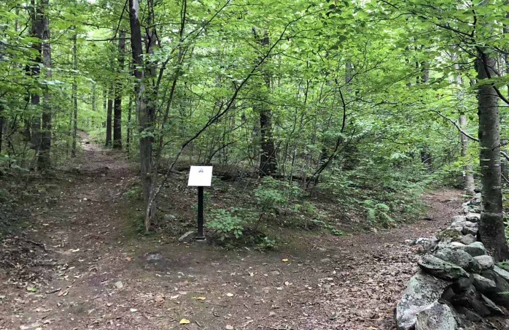

M5 · 课程读本 · 《数字化时代的数字化学习》（作者：段玉佩，书稿 240929 版，文字修订版）M5 · Course reader · Digital Learning in the Digital Age (Yupei Duan, manuscript 240929, language-revised edition)
读本：第 15 章节选 · 路Reader: Chapter 15 (excerpt) · The Roads
怎么读：这是全书的最后一章，也是你写学期反思的示范——作者把 2003、2007、2020 三个时间点的自己排在一起看，每个判断都落在具体的路、具体的人、具体的事上。第 16 周必读，约 10 分钟。读本有中文和英文两个版本，用页眉的 English / 中文 按钮切换；读一种语言即可。原文中作者的求学与任教经历及相关校名，本节选未收入；个别段落略去处以“……”标示。M3 想学更多里的《路》短节选是本章“三条路”的一部分——这里是更完整的版本。
How to read: the book's final chapter, and the model for your semester reflection — the author lines up his 2003, 2007 and 2020 selves, and every judgement lands on a particular road, person or event. Required in Week 16, ~10 min. The reader is here in both languages — switch with the header button; read in one language only. The author's schooling, teaching career and the institutions named in the full chapter are not included in this excerpt; omissions are marked “…”. The short “Roads” excerpt in M3's Want-more page is part of this chapter's three roads — this is the fuller version.
目录Contents: 开头Opening · 三条路Three roads · 天空中不留下飞鸟的痕迹The sky keeps no trace of the bird · 网“路”The net-road
开头Opening 必读 · 约 1 分钟Required · ~1 min
世间的路有千万条。
There are ten thousand roads in the world.
我走过江南空水氤氲的石板路，走过西北苍凉孤远的黄土路，走过云南热带雨林中板根错节的泥沼路……我曾在诗人 Robert Frost 的新罕布什尔州故居旁的林中路中徘徊，曾在台北的忠孝东路走过几遍，曾在日落时分匆匆穿过洛杉矶的日落大道……此刻，有三条路从不同的时空延伸而来……
I have walked the misty flagstone lanes of the Yangtze delta, the bleak and lonely loess tracks of the northwest, the mud paths tangled with buttress roots in the rainforests of Yunnan… I have lingered on the woodland road beside Robert Frost's old New Hampshire home, walked Zhongxiao East Road in Taipei more than once, hurried across Sunset Boulevard in Los Angeles at dusk… And now three roads reach me from three different moments in time…

三条路Three roads 必读 · 约 4 分钟Required · ~4 min
第一条路：2003年，北京
The first road: Beijing, 2003
2003年，“非典型性肺炎”爆发了。我正读大学一年级，学校停课了，商店关门了，工厂停工了，整个北京安静了。我把书房里能读的书都读完了，对于阅读的渴求，促使我偷偷骑车去买书。那条通往书店的路，曾经熙攘拥堵，而那个时候却空空如也。我停下车，在马路中间躺下，正午的阳光照得我睁不开眼，透蓝的天空没有一丝云彩，连同那被晒得滚烫的空空的马路，像极了彼时我空空荡荡的大脑。
In 2003 SARS broke out. I was in my first year of university; the university closed, the shops closed, the factories stopped, and the whole of Beijing fell silent. I had read every book in the study, and the hunger to read drove me to sneak out on my bicycle to buy more. The road to the bookshop, once jammed with traffic, was utterly empty. I stopped, lay down in the middle of the road; the noon sun forced my eyes shut, the sky was a cloudless blue, and the hot, empty road beneath me was exactly like my own empty head at that moment.
第二条路：2007年，西昌
The second road: Xichang, 2007
2007年，我当教师的第二年，带着几名学生去四川省西昌市观摩长征火箭的发射现场。座谈会上，学生们和航空专家探讨星际移民、太空旅行，好不热闹。活动结束，我和学生们跋涉过火箭发射基地附近蜿蜒又泥泞的山路，去当地彝族同胞家里作客。出门迎接我们的是一个彝族小姑娘，年龄和我带领的初中生相仿。小姑娘带我们走进院子，再走进屋子，从明亮的环境进入黑暗的房间，让我的眼睛短时间内没有看清屋内的样子，房梁上垂下一个昏黄的灯泡，吃力地将半张桌子照亮。我们摸黑坐下，开始攀谈。彝族小姑娘身上的背囊中熟睡着她年幼的弟弟，每天她除了帮爸妈料理家务、喂养禽畜、抚养弟弟之外，还要干地里的农活儿……直到谈话快要结束，屋子另一端的床上传来的呻吟声才让我知道，面前这个年龄还是初中生的小姑娘，还要同时照顾病卧不起的奶奶。她是失学儿童。渐渐适应了屋内的黑暗，我发现这屋里的地面，和我们刚才蜿蜒而上的山路一样，泥泞不堪。
In 2007, my second year as a teacher, I took a few students to Xichang in Sichuan to watch a Long March rocket launch. At the symposium the students debated interstellar migration and space travel with the aerospace experts — a lively afternoon. Afterwards we trudged along the winding, muddy mountain path near the launch base to visit a family of the Yi people. A Yi girl came out to greet us, about the age of my middle-schoolers. She led us into the yard, then into the house; from bright daylight into a dark room, my eyes could not make out the interior for a while — a single dim bulb hung from the beam, straining to light half a table. We sat down in the gloom and talked. Her baby brother slept in the sling on her back; each day, besides helping her parents with the housework, feeding the animals and raising her brother, she worked the fields… Only near the end of our talk did a groan from a bed at the far end of the room tell me that this girl — still of middle-school age — was also nursing a bedridden grandmother. She was one of the children not in school. As my eyes adjusted, I saw that the floor of the house was as muddy as the mountain path we had just climbed.
第三条路：2020年，波士顿
The third road: Boston, 2020
2020年春节，我和家人在美国波士顿旅行，即将回国时，我们被告知航班被取消了。新冠肺炎疫情爆发。具体什么时候可以回去？没有定论。我们如果在美国感染了病毒怎么办？不敢想象。国内的亲朋们怎么样了？非常担心。
Chinese New Year 2020: my family and I were travelling in Boston, and just before we were to fly home we were told the flight was cancelled. COVID-19 had broken out. When could we go back? No one knew. What if we caught the virus in America? Unthinkable. How were our relatives and friends at home? We were deeply worried.
坐在波士顿后湾的一家餐厅里享用了一顿大餐后，我和家人的心态渐渐平和下来。对面坐着三个小伙子：小孙、小巢和小陈，前两位正在读博士，小陈一年前硕士毕业，是往返于波士顿和纽约之间的公司白领。当我要起身结账时，这三个大男孩儿微笑着说他们已经结过了，他们脸上展现的得意，让我想起了十多年前这些家伙们还在读初中时的样子——那时，我是他们的初中班主任。那时我的年纪，正如2020年的他们。12年后风水轮流转，照顾与被照顾者，掉了个个儿。他们让我别担心，不如趁此机会在美国东部多转转，有事可以找他们帮忙。不远处的查尔斯河畔，宽敞的步道上，跑步者不绝如缕，他们轻快的步伐奏出轻快的维瓦尔第的《四季》之春，冰雪开始融化。
After a big meal in a restaurant in Boston's Back Bay, my family and I began to calm down. Across the table sat three young men — Sun, Chao and Chen; the first two were doing doctorates, and Chen, a year out of his master's, was an office worker shuttling between Boston and New York. When I rose to pay, the three grown boys smiled and said it was already settled, and the pride on their faces took me back more than ten years to when they were in middle school — when I was their homeroom teacher. I was then the age they were in 2020. Twelve years on, the wheel had turned: carer and cared-for had swapped places. They told me not to worry, to use the chance to see more of the American east coast, and to call them if anything came up. Not far away, on the wide walkway along the Charles River, runners streamed past; their light steps played the spring of Vivaldi's Four Seasons, and the ice had begun to melt.
天空中不留下飞鸟的痕迹，但我已飞过The sky keeps no trace of the bird — yet I have flown 必读 · 约 3 分钟Required · ~3 min
从小学到大学，我算不上老师眼中的好学生。我不喜欢机械性地记背可以拿到高分的标准答案，总喜欢多问一些为什么。在很多次不能从老师那里得到满意的答案之后，我学会了从书本上自己寻找解释。我的任何问题，总能在某一本书中找到答案。高三时，我偶然从报纸上看到泰戈尔的诗句：“天空中不留下飞鸟的痕迹，但我已飞过。”我翻遍了学校图书馆也没有找到泰戈尔的《飞鸟集》，在学校附近的书店中也没有收获。直到我进入大学，办理好了图书证，突然想到了泰戈尔的这句诗，就直冲向大学图书馆，去借阅《飞鸟集》。那是作为生物系学生的我，在大学图书馆借阅的第一本书。我现在都能想起当时我拿到《飞鸟集》时的沮丧，因为它就是一个薄薄的小册子，并未像我之前无数次幻想的那样，是一部装帧精美的大部头文学巨著。
From primary school to university I was never a teacher's idea of a good student. I disliked memorising the standard answers that earned high marks, and kept asking one more why. After many answers that did not satisfy me, I learned to look for explanations in books on my own; every question of mine could be answered in some book. In my last year of school I chanced on a line of Tagore in a newspaper: “the sky keeps no trace of the bird — yet I have flown.” I searched the school library for his Stray Birds and found nothing, and the bookshops near the school had nothing either. Only at university, library card freshly issued, did the line come back to me — and I went straight to the university library to borrow Stray Birds. It was the first book I, a biology student, ever borrowed there. I can still feel my dismay on holding it: a thin little pamphlet, not at all the finely bound literary monument I had imagined countless times.
“非典”之后，我不必再靠骑车远行去买书来解决大脑无书可读的饥饿感了。点击鼠标，就能在互联网上找到卷帙浩繁的资料供我学习。从博尔赫斯的诗歌到海德格尔的存在主义哲学；从菲利普·津巴多的心理学到乔治·奥威尔的小说；从卡尔·萨根的科普到莫奈的画作……互联网给了我一所无边际的大学。
After SARS, I no longer had to ride far to buy books against my brain's hunger. A click of the mouse laid endless material before me: from Borges's poems to Heidegger's existentialism, from Philip Zimbardo's psychology to George Orwell's novels, from Carl Sagan's popular science to Monet's paintings… The internet gave me a university without walls.
编者注：原文此后记述了作者任教与在线求学的经历，涉及具体校名，本节选略去。Editor's note: the chapter goes on to the author's teaching career and online studies; those passages name institutions and are omitted from this excerpt.
网“路”The net-road 必读 · 约 2 分钟Required · ~2 min
感谢时代，感谢科技的发展。在“网路”广开的现在，在更高效的在线教育的辅助下，我相信，无论是2003年“非典”时期的那条空荡荡的马路，还是2007年西昌那条泥泞的山路，都可以与查尔斯河畔的宽敞步道一样，穿过时间、空间和人间，融汇成一条路……我相信，那承载着优质而廉价知识的“网路”，可以让所有的“畏途”变为“通途”，以更丰富的教育资源让中国的每一个村落和世界上每一个角落的学习者，都能称心如意地得到自己想要的学习资源，选择最适合自己的学习形式。希望你、我和他们，都能如查尔斯河畔步道上驰骋的跑步者，以他们自己喜好的速度、方向和方式，在美好与阳光中通畅前行。
I am grateful to the times, and to the advance of technology. Now that the “net-road” lies wide open, and with the help of ever more effective online education, I believe the empty street of the SARS spring of 2003 and the muddy mountain path of Xichang in 2007 can both become like the wide walkway along the Charles — crossing time, space and the world of people, merging into a single road… I believe the “net-road”, carrying knowledge that is excellent and cheap, can turn every “road of dread” into a “road of passage”, and with richer resources let learners in every village of China and every corner of the world get the learning they want, in the form that suits them best. May you, I and they all move forward like the runners on the Charles River walkway — at the speed, in the direction and in the manner each of us prefers, in beauty and in sunlight.
读完想一想（为反思做准备）After reading (toward your reflection)
- 作者不写“我成长了很多”——他写空马路、昏黄的灯泡、查尔斯河畔的步道。你的反思里，哪个具体的东西能替你说话？（一张截图、一张卡、一条日志。）The author never writes “I grew a lot” — he writes an empty road, a dim bulb, a river walkway. In your reflection, which specific thing can speak for you? (A screenshot, a card, a log line.)
- 三条路隔着 17 年；你的两个时间点只隔 14 周。时间短，对照的方法是一样的：同一把尺子，两次测量。His roads span seventeen years; your two moments are fourteen weeks apart. The span differs, the method doesn't: one ruler, two measurements.
看一段（选看，约 1.5 分钟）Watch (optional, ~1.5 min)
你的反思，可能是没用的——什么才是有效反思？ · 1:40 · B 站 UP 主 大象生 · 2022Your reflection might be useless — what makes reflection effective? · 1:40 · Bilibili uploader 大象生 · 2022 · 在 B 站打开 ↗Open on Bilibili ↗
一分半钟说一件事：光后悔、光感慨不是反思，指向下一步行动的才是。和微课 3 的第 ⑤ 段呼应。Ninety seconds on one point: regret and sighing are not reflection — only what points to a next action is. It echoes part ⑤ of micro-lesson 3.